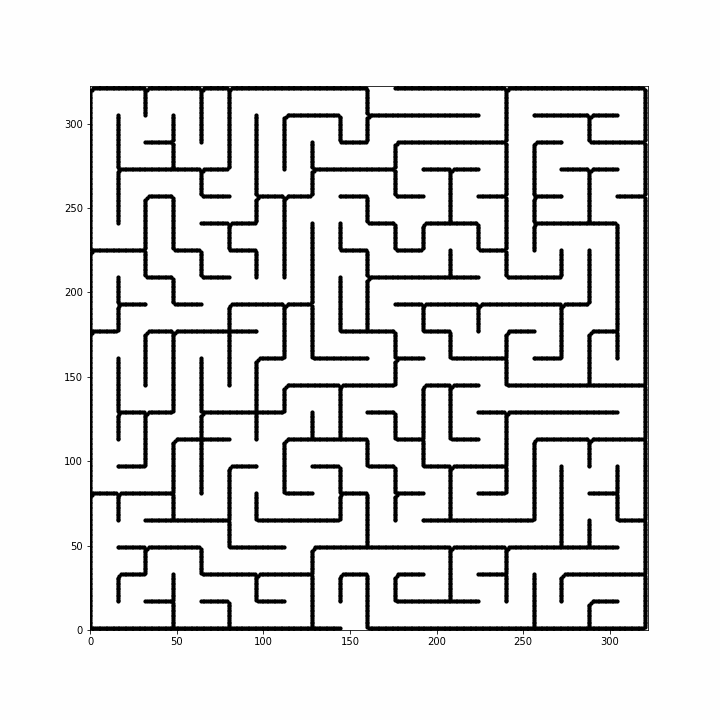
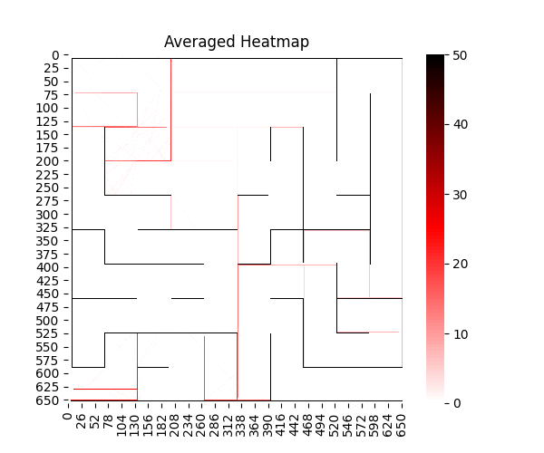
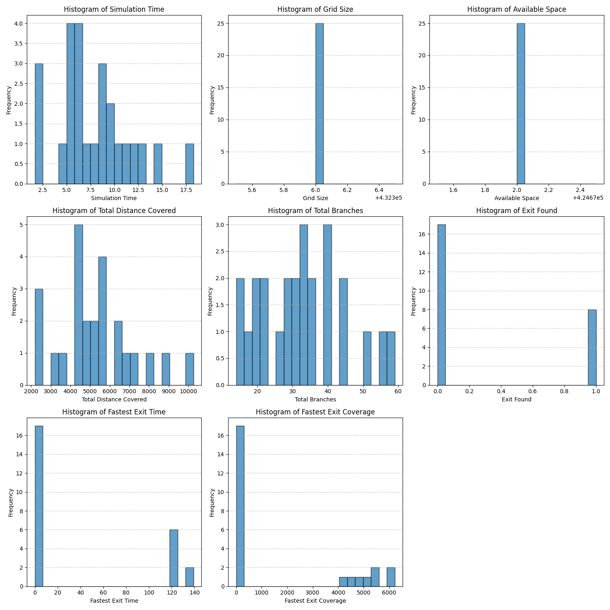
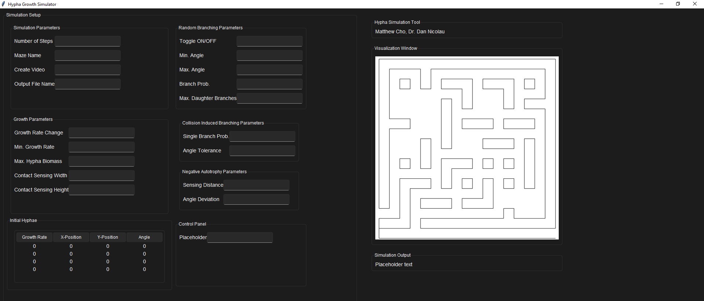

New paths emerge
Random branching uses configurable angles, frequency, probability, and daughter limits; collisions can trigger additional branches.
A configurable simulation suite for studying how fungal hyphae grow, branch, sense boundaries, and explore complex microfluidic mazes.
The simulation represents fungal hyphae as connected, branching agents. Each active tip advances through a digitized maze while local rules govern growth rate, turning, branching, collision response, biomass, and interactions with nearby hyphae. Hierarchical mother–daughter relationships preserve lineage and coordinate resource allocation across the expanding network. Local optimization supports the needs of individual hyphae, while global optimization balances growth across the colony.
Fungal networks adapt as their growing tips encounter walls, sibling branches, and constrained openings. Understanding that emergent behavior requires more than tracing a single path.
The software creates a controlled environment for isolating growth mechanisms and asking how they influence maze coverage, branching, time to exit, and the efficiency of exploration.
Maze images are skeletonized into boundaries and classified into wall geometries. Each hypha maintains its lineage, nodes, growth state, directional memory, and biomass. The model checks proposed movement against walls and existing growth before updating the network.
Random branching uses configurable angles, frequency, probability, and daughter limits; collisions can trigger additional branches.
Directional memory lets a tip recover its trajectory after navigating a boundary, while collision checks prevent invalid growth.
Negative autotropism detects nearby unrelated tips and adjusts direction, reducing overlap between expanding networks.
Animated trajectories expose individual decisions; aggregate outputs reveal where repeated simulations explore and how outcomes vary.




A desktop control surface exposes simulation length, maze selection, starting hyphae, growth dynamics, branching rules, contact sensing, directional behavior, output naming, and animation generation.
01Agent-based models make assumptions visible by translating biological hypotheses into explicit rules.
02Repeated runs and aggregate spatial outputs are essential when stochastic behavior drives individual trajectories.
03A configurable interface turns a simulation into an experimental tool other researchers can interrogate.